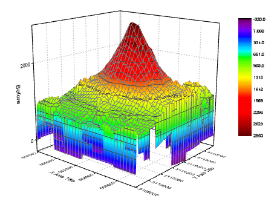

Gestapelte 3D-Oberflächendiagramme
3D-Stack-Surface
Zusammenfassung
Dieses Tutorial zeigt, wie gestapelte 3D-Oberflächendiagramme mit Farbabbildung aus verschiedenen Matrixobjekten erstellt werden. Die Oberflächen in der Zeichnung zeigen die Topologie vor und nach einem Vulkanausbruch an.
Origin-Version mind. erforderlich: Origin 2015 SR0
Was Sie lernen werden
Dieses Tutorial zeigt Ihnen, wie Sie:
- gestapelte 3D-Oberflächendiagramme mit Farbabbildung erzeugen,
- die Achsenanzeige und Layereigenschaften benutzerdefiniert anpassen,
- ein 3D-Diagramm in der Größe verändern und es drehen.
Schritte
Mehrere Oberflächendiagramme mit Farbabbildung erstellen
- Wählen Sie im Menü Hilfe: Lernzentrum oder drücken Sie die Taste F11, um das Lernzentrum zu öffnen. Wählen Sie die Registerkarte Diagrammbeispiel und wählen Sie dann 3D-Oberflächendiagramme in der Auswahlliste. Klicken Sie doppelt auf das Diagrammbeispiel unten, um das Beispiel "3D Surface Plots - Stacked 3D Surface Plots" zu öffnen.
Hinweis: Dieses Tutorial ist mit dem Ordner Stacked 3D Surface Plots des Projekts "Tutorial Data" verbunden: <Origin EXE Folder>\Samples\Tutorial Data.opj.
- Aktivieren Sie die Matrixmappe Mbook1, die zwei Matrixobjekte enthält, und klicken Sie dann auf Zeichnen: 3D: Mehrere Oberflächendiagramme mit Farbabbildung, um zwei 3D-Oberflächendiagramme aus diesen zwei Matrixobjekten zu erstellen, wie unten zu sehen:
- 
- Klicken Sie zum Öffnen des Dialogs Details Zeichnung doppelt auf das Diagramm. Wenn das linke Bedienfeld nicht erweitert ist, verwenden Sie die Schaltfläche unten links im Dialog. Es gibt zwei Oberflächen im Zweig Layer1 im linken Bedienfeld. Um die Oberfläche nach dem Ausbruch - "After eruption" - auf der Z-Achse zu versetzen, aktivieren Sie die zweite Zeichnung unter Layer1 im linken Bedienfeld und wechseln Sie im rechten Bedienfeld zur Registerkarte Oberfläche. Aktivieren Sie dann das Kontrollkästchen vor Z-Versatz nach Prozent des Skalierungsbereichs und geben Sie im Textfeld 70 ein.
- Deaktivieren Sie auf der Registerkarte Füllung in der Gruppe Vordergrundoberfläche das Kontrollkästchen Identisch, um die Kontur mit dem gleichen Matrixobjekt zu füllen (Mat "Before"), das auch bei der anderen Oberfläche verwendet wurde.
- Wechseln Sie zur Registerkarte Farbpalette/Kontur. Klicken Sie auf die Überschrift Ebene, um den Dialog Ebenen festlegen zu öffnen. Legen Sie die Parameter wie im folgenden Bild gezeigt fest und klicken Sie auf OK.
- Deaktivieren Sie dann das Kontrollkästchen Konturen aktivieren, um die Konturlinien auszublenden. Klicken Sie auf OK.
- Wechseln Sie zur Registerkarte Drahtgitter und deaktivieren Sie das Kontrollkästchen Aktivieren, um das Drahtgitter zu deaktivieren.
- Wiederholen Sie die Schritte 5 bis 6 für die erste Zeichnung unter Layer1.
- In diesem Projekt verwenden die zwei Oberflächen die gleiche Matrix für das Füllen der Kontur. Das heißt, sie teilen sich eine Farbskala. Um die Farbskala benutzerdefiniert anzupassen, klicken Sie doppelt auf die Farbskala. Der Dialog Eigenschaften Farbskala wird geöffnet. Aktivieren Sie das Kontrollkästchen vor Umgekehrt und setzen Sie die Breite des Farbbalkens auf 100. Klicken Sie auf OK.
Achsenanzeige benutzerdefiniert anpassen
Der nächste Schritt besteht darin, das Format der Achsenskalierung und Hilfsstrichbeschriftung im Dialog Achsen zu ändern. Um diesen Dialog zu öffnen, klicken Sie auf Format: Achsen: X-Achse.
- Ändern Sie die Einstellungen auf der Registerkarte Skalierung:
- Legen Sie die Werte der Skalierung von 558000 bis 566500 für die X-Achse fest, von 5108200 bis 5108200 für die Y-Achse und von 0 bis 10000 für die Z-Achse.
- Legen Sie für die X-Achse den Typ der Großen Hilfsstriche auf Nach Anzahl und die Anzahl auf 5 fest. Legen Sie für die Y- und Z-Achse den Typ der Großen Hilfsstriche auf Nach Inkrement und den Wert auf 2000 fest. Um alle kleinen Hilfsstriche auszublenden, setzen Sie die Anzahl der Kleinen Hilfsstriche für alle Achsen auf 0.
- Beschriftung von Hilfsstrichen benutzerdefiniert anpassen:
- Stellen Sie zuerst sicher, dass Nur eine Achse für jede Richtung zeigen oben im Dialog Achsen aktiviert ist.
- Gehen Sie zur Registerkarte Beschriftung der Hilfsstriche und halten Sie die Strg-Taste gedrückt, um die Symbole X, Y und Z gleichzeitig auszuwählen, so dass sie zusammen benutzerdefiniert angepasst werden können. Legen Sie Benutzerdefiniert für Anzeige fest und wählen Sie P*3 in der Auswahlliste Benutzerdefiniertes Format, um die Beschriftungen als wissenschaftliche Notation zur Basis 10 mit 3 signifikanten Stellen zu zeigen. Klicken Sie auf OK. Weitere Informationen zu den Optionen in dieser Auswahlliste finden Sie unter Benutzerdefiniertes Anzeigeformat.
Layereigenschaften benutzerdefiniert anpassen:
- Klicken Sie doppelt auf den leeren Bereich außerhalb der Zeichnungen oder klicken Sie auf Format: Layer im Menü, um den Dialog Details Zeichnung - Layer zu öffnen.
- Aktivieren Sie die Registerkarte Sonstiges im rechten Bedienfeld. Aktivieren Sie das Kontrollkästchen vor Aktivieren in der Gruppe Abschneiden. Das Bild außerhalb des Achsenbereichs wird nun entsprechend der Einstellungen in dieser Gruppe Abschneiden zurecht geschnitten.

- Setzen Sie auf der Registerkarte Ebenen die Farbe für alle Ebenen auf Hellgrau. Wählen Sie in der Auswahlliste im Abschnitt Würfel die Option Vordere Ecke, um die Kante des Würfels zu zeigen.
- Wählen Sie die Registerkarte Beleuchtung. Wählen Sie in der Gruppe Modus die Option Direktional, um den Belichtungsmodus zu aktivieren. Legen Sie die Lichtfarbe wie im folgenden Diagramm gezeigt fest. Klicken Sie auf OK.
Zeichnung in der Größe verändern und drehen
- Klicken Sie auf den Würfel (nicht die Datenzeichnung), um die 3D-Symbolleiste zu aktivieren. Klicken Sie auf die Schaltfläche Größe verändern . Ein kartesisches 3D-Koordinatensystem wird angezeigt. Positionieren Sie den Cursor auf der Y-Achse. Diese wird markiert. Gleichzeitig ziehen Sie die Y-Achse per Drag&Drop, um die Zeichnung in Richtung der Y-Achse zu strecken. Tun Sie dasselbe in X- und Z-Richtung.
- Klicken Sie auf die Schaltfläche Drehen , um den Modus Drehen zu aktivieren. Eine Kugel wird mitten in der Zeichnung angezeigt. Drehen Sie die Zeichnung, um eine bessere Ansicht zu erhalten.
- Mit der 3D-Symbolleiste können Sie die Größe des Diagramms verändern und es drehen. Sie können aber auch die gleiche Ansicht wie von Graph1 in diesem Sample-Projekt erhalten, indem Sie den Wert auf der Registerkarte Achsen des Dialogs Layereigenschaften, wie im folgenden Diagramm gezeigt, festlegen.